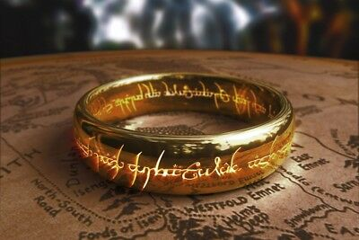

Do you remember the stories you read as a child? Those tales of fantasy and bravery; the wonder of strange lands which you remember fondly to this day. For me, that story was told by J.R.R. Tolkien. The Hobbit, along with The Lord of The Rings Trilogy, has been integral to the fantasy genre since their conceptions in 1932 and 1948, respectively. It has been through these works that Tolkien’s ideas have lived on in our overall consciousness and most likely why you're here right now!
If you would like to learn more about Tolkien's writing, feel free to check out the links above!
The General-Information link will inform you on the man of the hour and his world.
The In-World-History link will give you a sneak peak into what the details of LOTR are like.
The Sources link will take you to some other information wells if you're interested.
I hope you find what you're looking for and may all your days be merry!
By Noah Quintin